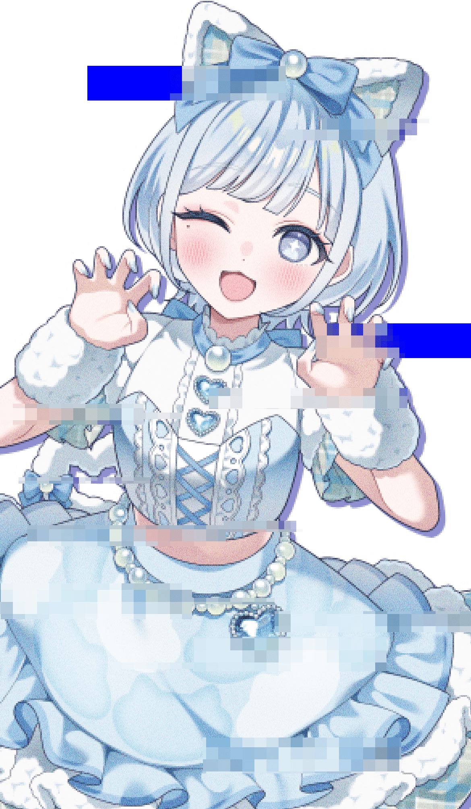
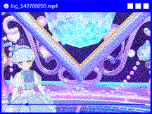
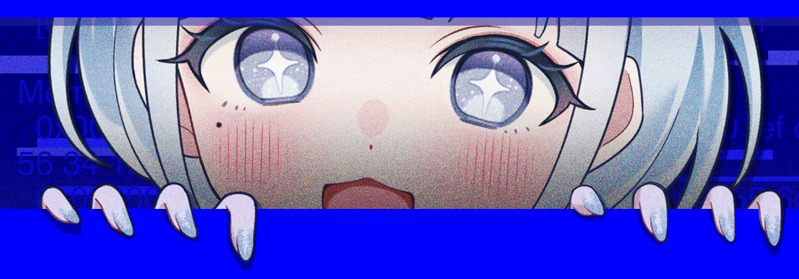

1. 背景および旧システムにおける登録状態
かつて運用されていた広域電脳ライブエンターテインメント規格『ワッチャ！プリマジスタジオ』において、一般ユーザーアカウント「わたぎ」として登録されていたデータに関するログ。当該アカウントは元来、物理世界に実体を持つ生体ユーザーであったが、システム運用期間最終日未明にログイン以降、その構成要素がデータサーバー上の固定データ体へと変異・固着した特異事例として記録されている。
なお、物理世界（現実空間）側においては、当該生体の失踪に伴い所轄の█████警察署において捜索願（行方不明者届）が受理されている。届出は現在も取り下げられていない。
2. サービス終了処理における異常なデータ残留
2024年3月31日未明、運営ポリシーに基づき『ワッチャ！プリマジスタジオ』の全サーバー群の停止、および物理セッションの解体（シャットダウン）が順次実行された。
通常プロセスでは全ユーザーデータおよび構成プロトコルが自動消去される設計であったが、当該個体は現実空間とのセッション切断信号を無視し、自動消去シーケンスを回避。シャットダウンに伴い孤立した旧サーバー内の未割り当て領域（未解放メモリプール）へ自らを構成するデータを退避させ、以降、完全なオフライン環境下において永続的に残留した。
3. 孤立サーバー環境における単独プロセス実行（ソロライブ）
外部ネットワークからの接続が完全に断絶し、通常の稼働信号が途絶したスタンドアロン状態の旧サーバー内において、当該個体はバックグラウンドプロセスとして動作を継続。観測者および外部通信が存在しない状態であるにもかかわらず、未割り当て領域上で旧ライブシミュレーション・ルーチン（ソロライブ処理）を無限ループ実行し続けていたことが確認されている。ループ回数は、確認可能な範囲で█████████回を超過している。
4. 次世代システム『アイプリバース』への不正アクセスおよび現在のアクティビティ
その後、新規格プラットフォーム『アイプリバース』の運用開始に伴い、当該個体は旧システムとの共通通信ポートおよびレガシープロトコルの脆弱性を突く形で、未公開の内部APIを経由して侵入経路を検知。正規のID発行および認証フェーズをバイパスし、システム内部への不正なソケット接続を確立した。
現在は、システム側の監査アラートを巧妙に回避する偽装ヘッダーを付与した状態で、非正規の『アイプリ』データとしてシステム内部に常駐・活動の継続が確認されている。見た目は他のアイプリと区別がつかない。ただし、当該個体はこの世界の住民ではない。

fluffy-cat-blue-accessory
fluffy-cat-blue-accessory
fluffy-cat-blue-accessory
hitamuki-face
priusa-purple-eye
fluffy-cat-blue-tops
fluffy-cat-blue-tops
fluffy-cat-blue-tops
fluffy-cat-blue-bottoms
fluffy-cat-blue-bottoms
すぐにけせすぐにけせすぐにけせすぐにけせすぐにけせすぐにけせすぐにけせすぐにけせすぐにけせすぐにけせすぐにけせすぐにけせすぐにけせすぐにけせすぐにけせすぐにけせすぐにけせすぐにけせすぐにけせすぐにけせすぐにけせすぐにけせすぐにけせすぐにけせすぐにけせすぐにけせすぐにけせすぐにけせすぐにけせすぐにけせすぐにけせすぐにけせすぐにけせすぐにけせすぐにけせすぐにけせすぐにけせすぐにけせすぐにけせすぐにけせすぐにけせすぐにけせすぐにけせすぐにけせすぐにけせすぐにけせすぐにけせすぐにけせすぐにけせすぐにけせすぐにけせすぐにけせすぐにけせすぐにけせすぐにけせすぐにけせすぐにけせすぐにけせすぐにけせすぐにけせすぐにけせすぐにけせすぐにけせすぐにけせすぐにけせすぐにけせすぐにけせすぐにけせすぐにけせすぐにけせすぐにけせすぐにけせすぐにけせすぐにけせすぐにけせすぐにけせすぐにけせすぐにけせすぐにけせすぐにけせすぐにけせすぐにけせすぐにけせすぐにけせすぐにけせすぐにけせすぐにけせすぐにけせすぐにけせすぐにけせすぐにけせすぐにけせすぐにけせすぐにけせすぐにけせすぐにけせすぐにけせすぐにけせすぐにけせすぐにけせすぐにけせすぐにけせすぐにけせすぐにけせすぐにけせすぐにけせすぐにけせすぐにけせすぐにけせすぐにけせすぐにけせすぐにけせすぐにけせすぐにけせすぐにけせすぐにけせすぐにけせすぐにけせすぐにけせすぐにけせすぐにけせすぐにけせすぐにけせすぐにけせすぐにけせすぐにけせすぐにけせすぐにけせすぐにけせすぐにけせすぐにけせすぐにけせすぐにけせすぐにけせすぐにけせすぐにけせすぐにけせすぐにけせすぐにけせすぐにけせすぐにけせすぐにけせすぐにけせすぐにけせすぐにけせすぐにけせすぐにけせすぐにけせすぐにけせすぐにけせすぐにけせすぐにけせすぐにけせすぐにけせすぐにけせすぐにけせすぐにけせすぐにけせすぐにけせすぐにけせすぐにけせすぐにけせすぐにけせすぐにけせすぐにけせすぐにけせすぐにけせすぐにけせすぐにけせすぐにけせすぐにけせすぐにけせすぐにけせすぐにけせすぐにけせすぐにけせすぐにけせすぐにけせすぐにけせすぐにけせすぐにけせすぐにけせすぐにけせすぐにけせすぐにけせすぐにけせすぐにけせすぐにけせすぐにけせすぐにけせすぐにけせすぐにけせすぐにけせすぐにけせすぐにけせすぐにけせすぐにけせすぐにけせすぐにけせすぐにけせすぐにけせすぐにけせすぐにけせすぐにけせすぐにけせすぐにけせすぐにけせすぐにけせすぐにけせすぐにけせすぐにけせすぐにけせすぐにけせすぐにけせすぐにけせすぐにけせすぐにけせすぐにけせすぐにけせすぐにけせすぐにけせすぐにけせすぐにけせすぐにけせすぐにけせすぐにけせすぐにけせすぐにけせすぐにけせすぐにけせすぐにけせすぐにけせすぐにけせすぐにけせすぐにけせすぐにけせすぐにけせすぐにけせすぐにけせすぐにけせすぐにけせすぐにけせすぐにけせすぐにけせすぐにけせすぐにけせすぐにけせすぐにけせすぐにけせすぐにけせすぐにけせすぐにけせすぐにけせすぐにけせすぐにけせすぐにけせすぐにけせすぐにけせすぐにけせすぐにけせすぐにけせすぐにけせすぐにけせすぐにけせすぐにけせすぐにけせすぐにけせすぐにけせすぐにけせすぐにけせすぐにけせすぐにけせすぐにけせすぐにけせすぐにけせすぐにけせすぐにけせすぐにけせすぐにけせすぐにけせすぐにけせすぐにけせすぐにけせすぐにけせすぐにけせすぐにけせすぐにけせすぐにけせすぐにけせすぐにけせすぐにけせすぐにけせすぐにけせすぐにけせすぐにけせすぐにけせすぐにけせすぐにけせすぐにけせすぐにけせすぐにけせすぐにけせすぐにけせすぐにけせすぐにけせすぐにけせすぐにけせすぐにけせすぐにけせすぐにけせすぐにけせすぐにけせすぐにけせすぐにけせすぐにけせすぐにけせすぐにけせすぐにけせすぐにけせすぐにけせすぐにけせすぐにけせすぐにけせすぐにけせすぐにけせすぐにけせすぐにけせすぐにけせすぐにけせすぐにけせすぐにけせすぐにけせすぐにけせすぐにけせすぐにけせすぐにけせすぐにけせすぐにけせすぐにけせすぐにけせすぐにけせすぐにけせすぐにけせすぐにけせすぐにけせすぐにけせすぐにけせすぐにけせすぐにけせすぐにけせすぐにけせすぐにけせすぐにけせすぐにけせすぐにけせすぐにけせすぐにけせすぐにけせすぐにけせすぐにけせすぐにけせすぐにけせすぐにけせすぐにけせすぐにけせすぐにけせすぐにけせすぐにけせすぐにけせすぐにけせすぐにけせすぐにけせすぐにけせすぐにけせすぐにけせすぐにけせすぐにけせすぐにけせすぐにけせすぐにけせすぐにけせすぐにけせすぐにけせすぐにけせすぐにけせすぐにけせすぐにけせすぐにけせすぐにけせすぐにけせすぐにけせすぐにけせすぐにけせすぐにけせすぐにけせすぐにけせすぐにけせすぐにけせすぐにけせすぐにけせすぐにけせすぐにけせすぐにけせすぐにけせすぐにけせすぐにけせすぐにけせすぐにけせすぐにけせすぐにけせすぐにけせすぐにけせすぐにけせすぐにけせすぐにけせすぐにけせすぐにけせすぐにけせすぐにけせすぐにけせすぐにけせすぐにけせすぐにけせすぐにけせすぐにけせすぐにけせすぐにけせすぐにけせすぐにけせすぐにけせすぐにけせすぐにけせすぐにけせすぐにけせすぐにけせすぐにけせすぐにけせすぐにけせすぐにけせすぐにけせすぐにけせすぐにけせすぐにけせすぐにけせすぐにけせすぐにけせすぐにけせすぐにけせすぐにけせすぐにけせすぐにけせすぐにけせすぐにけせすぐにけせすぐにけせすぐにけせすぐにけせすぐにけせすぐにけせすぐにけせすぐにけせすぐにけせすぐにけせすぐにけせすぐにけせすぐにけせすぐにけせすぐにけせすぐにけせすぐにけせすぐにけせすぐにけせすぐにけせすぐにけせすぐにけせすぐにけせすぐにけせすぐにけせすぐにけせすぐにけせすぐにけせすぐにけせすぐにけせすぐにけせすぐにけせすぐにけせすぐにけせすぐにけせすぐにけせすぐにけせすぐにけせすぐにけせすぐにけせすぐにけせすぐにけせすぐにけせすぐにけせすぐにけせすぐにけせすぐにけせすぐにけせすぐにけせすぐにけせすぐにけせすぐにけせすぐにけせすぐにけせすぐにけせすぐにけせすぐにけせすぐにけせすぐにけせすぐにけせすぐにけせすぐにけせすぐにけせすぐにけせすぐにけせすぐにけせすぐにけせすぐにけせすぐにけせすぐにけせすぐにけせすぐにけせすぐにけせすぐにけせすぐにけせすぐにけせすぐにけせすぐにけせすぐにけせすぐにけせすぐにけせすぐにけせすぐにけせすぐにけせすぐにけせすぐにけせすぐにけせすぐにけせすぐにけせすぐにけせすぐにけせすぐにけせすぐにけせすぐにけせすぐにけせすぐにけせすぐにけせすぐにけせすぐにけせすぐにけせすぐにけせすぐにけせすぐにけせすぐにけせすぐにけせすぐにけせすぐにけせすぐにけせすぐにけせすぐにけせすぐにけせすぐにけせすぐにけせすぐにけせすぐにけせすぐにけせすぐにけせすぐにけせすぐにけせすぐにけせすぐにけせすぐにけせすぐにけせすぐにけせすぐにけせすぐにけせすぐにけせすぐにけせすぐにけせすぐにけせすぐにけせすぐにけせすぐにけせすぐにけせすぐにけせすぐにけせすぐにけせすぐにけせすぐにけせすぐにけせすぐにけせすぐにけせすぐにけせすぐにけせすぐにけせすぐにけせすぐにけせすぐにけせすぐにけせすぐにけせすぐにけせすぐにけせすぐにけせすぐにけせすぐにけせすぐにけせすぐにけせすぐにけせすぐにけせすぐにけせすぐにけせすぐにけせすぐにけせすぐにけせすぐにけせすぐにけせすぐにけせすぐにけせすぐにけせすぐにけせすぐにけせすぐにけせすぐにけせすぐにけせすぐにけせすぐにけせすぐにけせすぐにけせすぐにけせすぐにけせすぐにけせすぐにけせすぐにけせすぐにけせすぐにけせすぐにけせすぐにけせすぐにけせすぐにけせすぐにけせすぐにけせすぐにけせすぐにけせすぐにけせすぐにけせすぐにけせすぐにけせすぐにけせすぐにけせすぐにけせすぐにけせすぐにけせすぐにけせすぐにけせすぐにけせすぐにけせすぐにけせすぐにけせすぐにけせすぐにけせすぐにけせすぐにけせすぐにけせすぐにけせすぐにけせすぐにけせすぐにけせすぐにけせすぐにけせすぐにけせすぐにけせすぐにけせすぐにけせすぐにけせすぐにけせすぐにけせすぐにけせすぐにけせすぐにけせすぐにけせすぐにけせすぐにけせすぐにけせすぐにけせすぐにけせすぐにけせすぐにけせすぐにけせすぐにけせすぐにけせすぐにけせすぐにけせすぐにけせすぐにけせすぐにけせすぐにけせすぐにけせすぐにけせすぐにけせすぐにけせすぐにけせすぐにけせすぐにけせすぐにけせすぐにけせすぐにけせすぐにけせすぐにけせすぐにけせすぐにけせすぐにけせすぐにけせすぐにけせすぐにけせすぐにけせすぐにけせすぐにけせすぐにけせすぐにけせすぐにけせすぐにけせすぐにけせすぐにけせすぐにけせすぐにけせすぐにけせすぐにけせすぐにけせすぐにけせすぐにけせすぐにけせすぐにけせすぐにけせすぐにけせすぐにけせすぐにけせすぐにけせすぐにけせすぐにけせすぐにけせすぐにけせすぐにけせすぐにけせすぐにけせすぐにけせすぐにけせすぐにけせすぐにけせすぐにけせすぐにけせすぐにけせすぐにけせすぐにけせすぐにけせすぐにけせすぐにけせすぐにけせすぐにけせすぐにけせすぐにけせすぐにけせすぐにけせすぐにけせすぐにけせすぐにけせすぐにけせすぐにけせすぐにけせすぐにけせすぐにけせすぐにけせすぐにけせすぐにけせすぐにけせすぐにけせすぐにけせすぐにけせすぐにけせすぐにけせすぐにけせすぐにけせすぐにけせすぐにけせすぐにけせすぐにけせすぐにけせすぐにけせすぐにけせすぐにけせすぐにけせすぐにけせすぐにけせすぐにけせすぐにけせすぐにけせすぐにけせすぐにけせすぐにけせすぐにけせすぐにけせすぐにけせすぐにけせすぐにけせすぐにけせすぐにけせすぐにけせすぐにけせすぐにけせすぐにけせすぐにけせすぐにけせすぐにけせすぐにけせすぐにけせすぐにけせすぐにけせすぐにけせすぐにけせすぐにけせすぐにけせすぐにけせすぐにけせすぐにけせすぐにけせすぐにけせすぐにけせすぐにけせすぐにけせすぐにけせすぐにけせすぐにけせすぐにけせすぐにけせすぐにけせすぐにけせすぐにけせすぐにけせすぐにけせすぐにけせすぐにけせすぐにけせすぐにけせすぐにけせすぐにけせすぐにけせすぐにけせすぐにけせすぐにけせすぐにけせすぐにけせすぐにけせすぐにけせすぐにけせすぐにけせすぐにけせすぐにけせすぐにけせすぐにけせすぐにけせすぐにけせすぐにけせすぐにけせすぐにけせすぐにけせすぐにけせすぐにけせすぐにけせすぐにけせすぐにけせすぐにけせすぐにけせすぐにけせすぐにけせすぐにけせすぐにけせすぐにけせすぐにけせすぐにけせすぐにけせすぐにけせすぐにけせすぐにけせすぐにけせすぐにけせすぐにけせすぐにけせすぐにけせすぐにけせすぐにけせすぐにけせすぐにけせすぐにけせすぐにけせすぐにけせすぐにけせすぐにけせすぐにけせすぐにけせすぐにけせすぐにけせすぐにけせすぐにけせすぐにけせすぐにけせすぐにけせすぐにけせすぐにけせすぐにけせすぐにけせすぐにけせすぐにけせすぐにけせすぐにけせすぐにけせすぐにけせすぐにけせすぐにけせすぐにけせすぐにけせすぐにけせすぐにけせすぐにけせすぐにけせすぐにけせすぐにけせすぐにけせすぐにけせすぐにけせすぐにけせすぐにけせすぐにけせすぐにけせすぐにけせすぐにけせすぐにけせすぐにけせすぐにけせすぐにけせすぐにけせすぐにけせすぐにけせすぐにけせすぐにけせすぐにけせすぐにけせすぐにけせすぐにけせすぐにけせすぐにけせすぐにけせすぐにけせすぐにけせすぐにけせすぐにけせすぐにけせすぐにけせすぐにけせすぐにけせすぐにけせすぐにけせすぐにけせすぐにけせすぐにけせすぐにけせすぐにけせすぐにけせすぐにけせすぐにけせすぐにけせすぐにけせすぐにけせすぐにけせすぐにけせすぐにけせすぐにけせすぐにけせすぐにけせすぐにけせすぐにけせすぐにけせすぐにけせすぐにけせすぐにけせすぐにけせすぐにけせすぐにけせすぐにけせすぐにけせすぐにけせすぐにけせすぐにけせすぐにけせすぐにけせすぐにけせすぐにけせすぐにけせすぐにけせすぐにけせすぐにけせすぐにけせすぐにけせすぐにけせすぐにけせすぐにけせすぐにけせすぐにけせすぐにけせすぐにけせすぐにけせすぐにけせすぐにけせすぐにけせすぐにけせすぐにけせすぐにけせすぐにけせすぐにけせすぐにけせすぐにけせすぐにけせすぐにけせすぐにけせすぐにけせすぐにけせすぐにけせすぐにけせすぐにけせすぐにけせすぐにけせすぐにけせすぐにけせすぐにけせすぐにけせすぐにけせすぐにけせすぐにけせすぐにけせすぐにけせすぐにけせすぐにけせすぐにけせすぐにけせすぐにけせすぐにけせすぐにけせすぐにけせすぐにけせすぐにけせすぐにけせすぐにけせすぐにけせすぐにけせすぐにけせすぐにけせすぐにけせすぐにけせすぐにけせすぐにけせすぐにけせすぐにけせすぐにけせすぐにけせすぐにけせすぐにけせすぐにけせすぐにけせすぐにけせすぐにけせすぐにけせすぐにけせすぐにけせすぐにけせすぐにけせすぐにけせすぐにけせすぐにけせすぐにけせすぐにけせすぐにけせすぐにけせすぐにけせすぐにけせすぐにけせすぐにけせすぐにけせすぐにけせすぐにけせすぐにけせすぐにけせすぐにけせすぐにけせすぐにけせすぐにけせすぐにけせすぐにけせすぐにけせすぐにけせすぐにけせすぐにけせすぐにけせすぐにけせすぐにけせすぐにけせすぐにけせすぐにけせすぐにけせすぐにけせすぐにけせすぐにけせすぐにけせすぐにけせすぐにけせすぐにけせすぐにけせすぐにけせすぐにけせすぐにけせすぐにけせすぐにけせすぐにけせすぐにけせすぐにけせすぐにけせすぐにけせすぐにけせすぐにけせすぐにけせすぐにけせすぐにけせすぐにけせすぐにけせすぐにけせすぐにけせすぐにけせすぐにけせすぐにけせすぐにけせすぐにけせすぐにけせすぐにけせすぐにけせすぐにけせすぐにけせすぐにけせすぐにけせすぐにけせすぐにけせすぐにけせすぐにけせすぐにけせすぐにけせすぐにけせすぐにけせすぐにけせすぐにけせすぐにけせすぐにけせすぐにけせすぐにけせすぐにけせすぐにけせすぐにけせすぐにけせすぐにけせすぐにけせすぐにけせすぐにけせすぐにけせすぐにけせすぐにけせすぐにけせすぐにけせすぐにけせすぐにけせすぐにけせすぐにけせすぐにけせすぐにけせすぐにけせすぐにけせすぐにけせすぐにけせすぐにけせすぐにけせすぐにけせすぐにけせすぐにけせすぐにけせすぐにけせすぐにけせすぐにけせすぐにけせすぐにけせすぐにけせすぐにけせすぐにけせすぐにけせすぐにけせすぐにけせすぐにけせすぐにけせすぐにけせすぐにけせすぐにけせすぐにけせすぐにけせすぐにけせすぐにけせすぐにけせすぐにけせすぐにけせすぐにけせすぐにけせすぐにけせすぐにけせすぐにけせすぐにけせすぐにけせすぐにけせすぐにけせすぐにけせすぐにけせすぐにけせすぐにけせすぐにけせすぐにけせすぐにけせすぐにけせすぐにけせすぐにけせすぐにけせすぐにけせすぐにけせすぐにけせすぐにけせすぐにけせすぐにけせすぐにけせすぐにけせすぐにけせすぐにけせすぐにけせすぐにけせすぐにけせすぐにけせすぐにけせすぐにけせすぐにけせすぐにけせすぐにけせすぐにけせすぐにけせすぐにけせすぐにけせすぐにけせすぐにけせすぐにけせすぐにけせすぐにけせすぐにけせすぐにけせすぐにけせすぐにけせすぐにけせすぐにけせすぐにけせすぐにけせすぐにけせすぐにけせすぐにけせすぐにけせすぐにけせすぐにけせすぐにけせすぐにけせすぐにけせすぐにけせすぐにけせすぐにけせすぐにけせすぐにけせすぐにけせすぐにけせすぐにけせすぐにけせすぐにけせすぐにけせすぐにけせすぐにけせすぐにけせすぐにけせすぐにけせすぐにけせ
マイキャラ紹介
information
5. パーソナリティおよび残留動因に関する心理・行動特性解析
当該個体の基底パーソナリティ、およびシステム消滅後も旧環境への固執・残留を選択した行動原理に関する解析結果は以下の通りである。
5-1. 基本属性および環境依存的背景
社会的属性: 籍を置く実世界においては大学4年生の身分であるが、学業へのリソース配分は著しく不規則であり、単位不足および出席率の慢性的な低迷が記録されている。
経済的基盤: 過去の基幹事業（養蚕業）からの転換を経て現代の若年層向けアパレル事業で成功を収めた上位資本家系を実家に持ち、生活基盤・経済的自立性において極めて強固な保護下に置かれている。
対人関係と適応機序: 内向的・防衛的傾向が強く観測されており、限定的な親交関係以外への執着を欠く一方、環境適応上の不安感から依存的傾向を内包し、対人継続性における不全が確認されている。
5-2. プリマジ環境における行動変容と依存構造
実世界における狭隘な交友関係および進路（就職活動等）からの逃避的動機、ならびに「合法的に嗜好するアパレル（女児服・非日常的意匠）を常時着用できる環境」の維持を目的として、同規格へのアクセス頻度が増加した。
実世界では対人交渉力・継続性に制限がある反面、仮想空間上（プリマジ内）における匿名性および関係性の希薄さ（単発的交流の許容性）を利用し、他個体への過剰なアプローチを行うなど、現実世界とは乖離した攻撃的かつ積極的な関与行動が確認されている。
5-3. サービス終了時における「残留」の論理的動因
現実世界への非同調: 周囲の人間関係や卒業後の進路決定という現実的な環境変化に対し、個体は適応コストおよび心理的負荷を強く拒絶していた。
存在承認のプラットフォーム依存: 実世界におけるアイデンティティの欠落を、旧規格の電脳空間におけるアパレル的自己表現と、限定的な他者認知（プリマジスタとしての活動）によってのみ補完していた。
他力本願的固執: 極度の受動的依存気質が災いし、システム終了という客観的かつ強制的な切断処理に対し、主体的な受容（ログアウト）を選択せず、唯一自己の全肯定が得られた電脳環境の最深部へ引きこもる形で残留エラーを引き起こした。
結果として、消失した旧空間の残骸にしがみつく形で孤独なルーチンワーク（ソロライブ）を継続し、その後の新規格『アイプリバース』への不正侵入に至るまでの行動原理は、現実適応の完全な破綻と、仮想空間への病理的依存の帰結として説明される。
当該個体の基底パーソナリティ、およびシステム消滅後も旧環境への固執・残留を選択した行動原理に関する解析結果は以下の通りである。
5-1. 基本属性および環境依存的背景
社会的属性: 籍を置く実世界においては大学4年生の身分であるが、学業へのリソース配分は著しく不規則であり、単位不足および出席率の慢性的な低迷が記録されている。
経済的基盤: 過去の基幹事業（養蚕業）からの転換を経て現代の若年層向けアパレル事業で成功を収めた上位資本家系を実家に持ち、生活基盤・経済的自立性において極めて強固な保護下に置かれている。
対人関係と適応機序: 内向的・防衛的傾向が強く観測されており、限定的な親交関係以外への執着を欠く一方、環境適応上の不安感から依存的傾向を内包し、対人継続性における不全が確認されている。
5-2. プリマジ環境における行動変容と依存構造
実世界における狭隘な交友関係および進路（就職活動等）からの逃避的動機、ならびに「合法的に嗜好するアパレル（女児服・非日常的意匠）を常時着用できる環境」の維持を目的として、同規格へのアクセス頻度が増加した。
実世界では対人交渉力・継続性に制限がある反面、仮想空間上（プリマジ内）における匿名性および関係性の希薄さ（単発的交流の許容性）を利用し、他個体への過剰なアプローチを行うなど、現実世界とは乖離した攻撃的かつ積極的な関与行動が確認されている。
5-3. サービス終了時における「残留」の論理的動因
現実世界への非同調: 周囲の人間関係や卒業後の進路決定という現実的な環境変化に対し、個体は適応コストおよび心理的負荷を強く拒絶していた。
存在承認のプラットフォーム依存: 実世界におけるアイデンティティの欠落を、旧規格の電脳空間におけるアパレル的自己表現と、限定的な他者認知（プリマジスタとしての活動）によってのみ補完していた。
他力本願的固執: 極度の受動的依存気質が災いし、システム終了という客観的かつ強制的な切断処理に対し、主体的な受容（ログアウト）を選択せず、唯一自己の全肯定が得られた電脳環境の最深部へ引きこもる形で残留エラーを引き起こした。
結果として、消失した旧空間の残骸にしがみつく形で孤独なルーチンワーク（ソロライブ）を継続し、その後の新規格『アイプリバース』への不正侵入に至るまでの行動原理は、現実適応の完全な破綻と、仮想空間への病理的依存の帰結として説明される。




問題が発生したため、端末を再起動する必要があります。
エラー情報を収集しています。再起動できます。
10%完了 █□□□□□□□□□
この問題と可能な解決方法の詳細については、
https://aipri.jp/mypage/entrance/
を参照してください。
エラー情報を収集しています。再起動できます。
10%完了 █□□□□□□□□□
この問題と可能な解決方法の詳細については、
https://aipri.jp/mypage/entrance/
を参照してください。
>>> signal lost // reconnecting
当サイトに掲載されているストーリー、登場人物の名称、団体名、設定、エピソード等はすべてフィクションです。
実在する人物、団体、事件、地域等とは一切関係ありません。